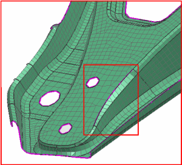
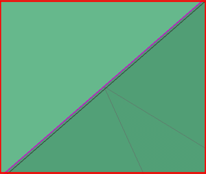
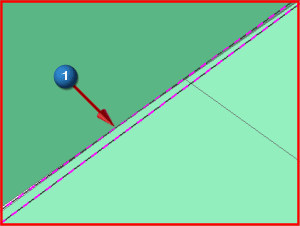
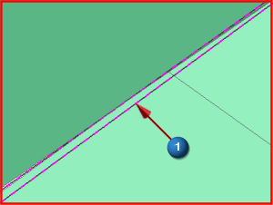
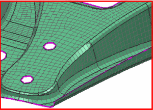
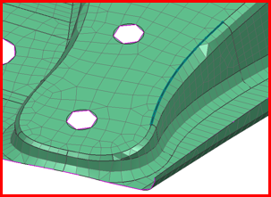

修复单元连接

 缩放(视图工具条—视图操作下拉菜单)
缩放(视图工具条—视图操作下拉菜单)
放大问题区域以便查看。

当您放大时，应该能看到有两条边没有缝合。

使用缝合边命令来修复自由边，缝合边将把实体或片体内，或者不同体之间的自由边缝合在一起，并创建一条公共边。

 缝合边(高级仿真工具条—自动修复几何体 下拉菜单)
缝合边(高级仿真工具条—自动修复几何体 下拉菜单)
-
方法
-
手工

注释
这个示例将展示手工缝合，您也可以使用自动边到边缝合来修复边。
-
要缝合的几何体
边到边
-



-
目标几何体
-

-

-
确定
-
 更新有限元模型(高级仿真工具条)
更新有限元模型(高级仿真工具条) -
 适合窗口(视图工具条—视图操作下拉菜单)
适合窗口(视图工具条—视图操作下拉菜单)
再次运行有限元模型检查以验证自由边已被修复。
 单元边(高级仿真工具条—信息下拉菜单)
单元边(高级仿真工具条—信息下拉菜单)
-
要检查的单元
-
显示
-
生成单元轮廓
-

关闭
自由边现在已被修复，显示缝合的边。
 首选项→模型显示
首选项→模型显示
-
多边形几何体
-
 显示缝合边
显示缝合边 -
厚度
1.40 mm

-
确定
-

下一步，您将使用手动网格划分工具来修复其它自由边。